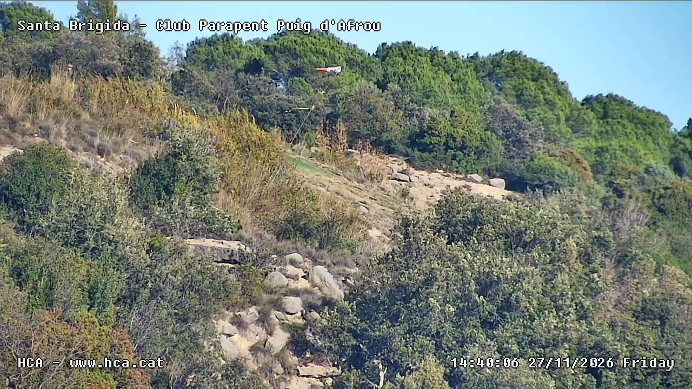

Santa Brígida · Puig d'Afrou
Club Parapent & Vigilància ADF · Amer
Actualitzant...
⚠️ ALERTA RISC INCENDI (Regla 30-30-30): Humitat baixa, temperatura elevada o vent fort detectat.

Enlairament Santa Brígida (Amer)
Pantalla completa
Vent Mitjà
--
Ràfega: -- km/h
Direcció
↓
--
--°
Temperatura
--
Pressió: -- hPa
Humitat Relativa
--
Risc incendi: Normal
Progressió Velocitat i Ràfegues (Avui)
km/h
Progressió Direcció del Vent (Avui)
0° N · 90° E · 180° S · 270° O